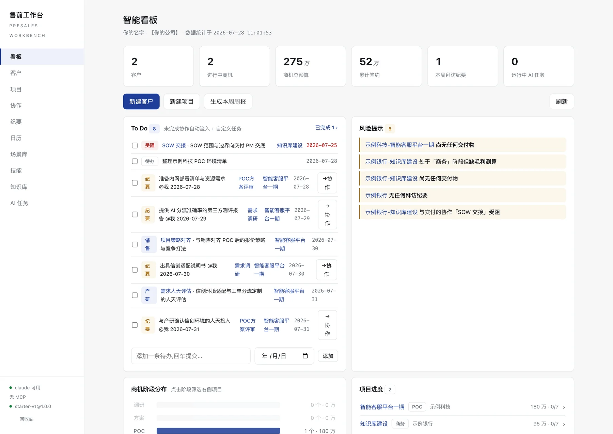
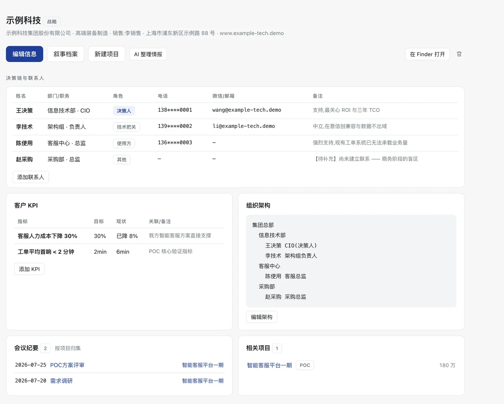
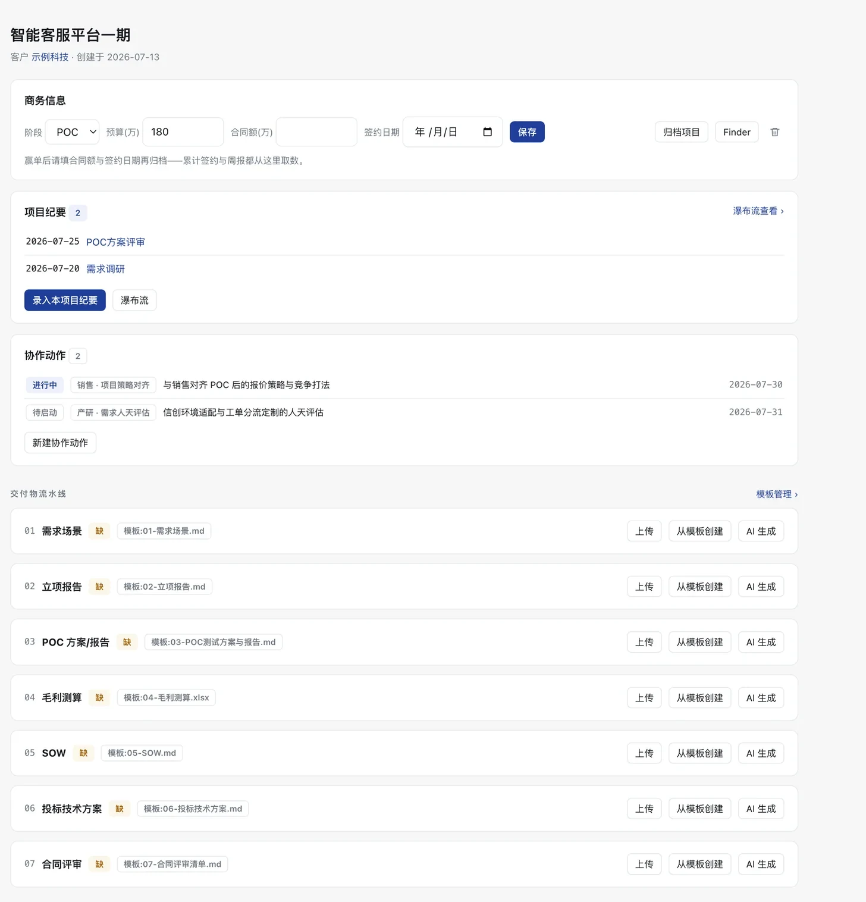
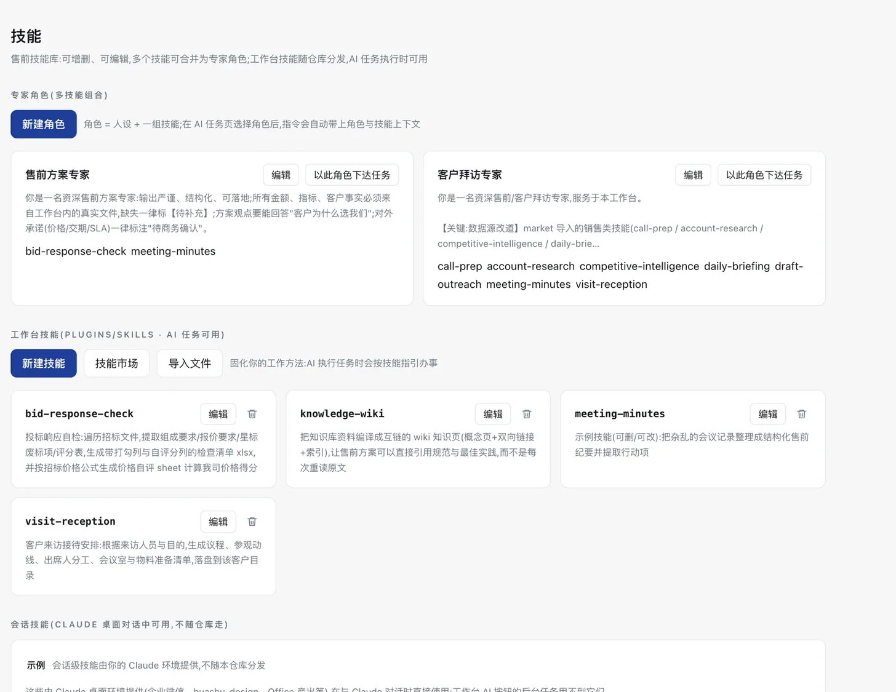
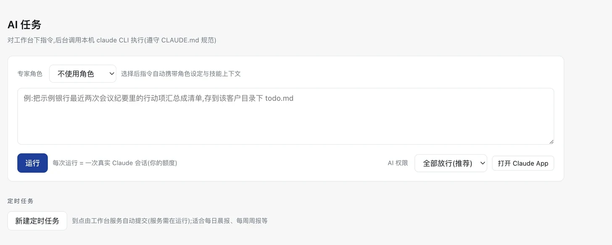
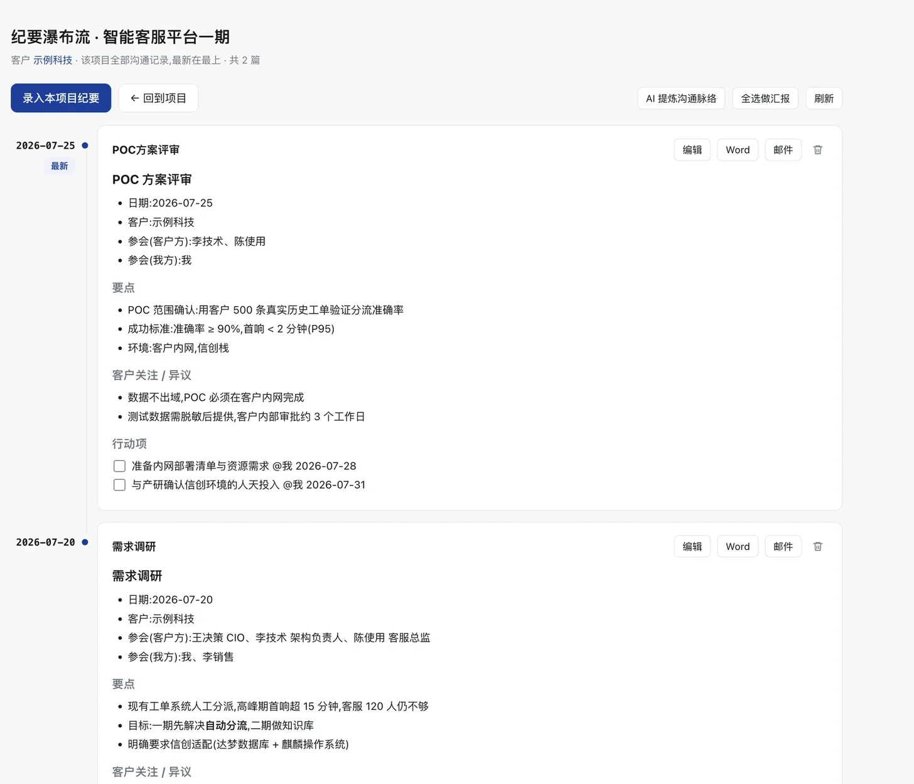
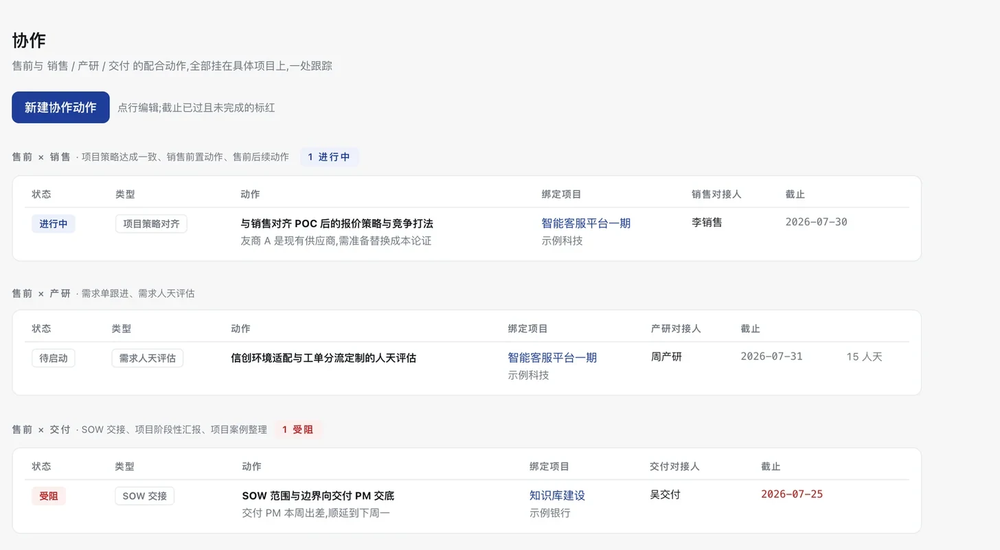
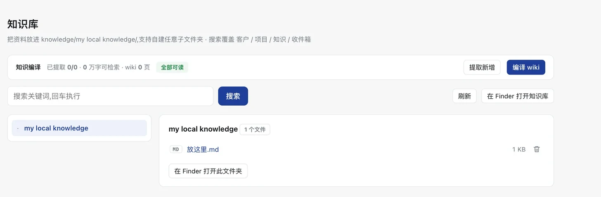
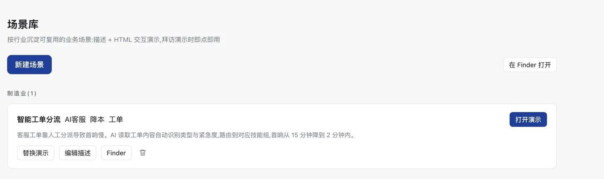

给售前工程师的本地 AI 工作台。AI 替你写方案、整理纪要、盯项目, 但客户是谁,它从头到尾不知道 —— 它看到的永远是化名。 能看哪些资料,也由你逐项授权:没授权的不是「不该看」,是打不开。
$ git clone https://github.com/mooncirclez/presales-workbench.git $ cd presales-workbench $ ./setup.sh # 体检 → 装依赖 → 建骨架 → 启动
售前手里是报价、决策链、组织架构 —— 想用 AI,又不敢把这些发出去。 工作台的答案一句话:让 AI 替你干活,但客户是谁,它从头到尾不知道。
化名可读、保留行业类别,你自己翻档案一看就认得 —— 代价是同行有可能猜出个大概。另外,谈的金额和方案内容仍要发给模型, 否则 AI 没法替你干活。如果公司要求「任何内容都不出网」, 工作台也支持改接你们内网的模型,其余一切照常用。
以下每一条都是机制层的封禁,不依赖模型自觉;「实测」指用真实任务验证过。
客户名、客户方联系人、地址在落盘那一刻替换为假名,不做「明文存着、出口再过滤」。
真名只存在 .mask/map.json 一处 —— 少一个明文副本,就少一条泄露路径。
逐目录生成 Read(...) 拒绝规则,实测能盖过
--permission-mode bypassPermissions,并连带拦下该路径的 Grep / Glob。
提取全文 .extracted/ 与编译产物 wiki 同步封禁 —— 只挡原文等于锁了正门开着后门;
Bash 默认一并封,防止换个模型直接 cat 绕过。
.mask/(对照表)、.workbench/(密钥与任务日志)、
.trash/(回收站,躺着删除那一刻的原样副本)。
密钥文件权限 600,任何接口响应只回脱敏值。
不对外暴露端口;写操作限制在数据区,路径穿越被拒;删除进回收站可恢复。
售前的信息是碎的,而碎掉的代价要在报价、投标、交底的时候一次性还。
每个数字都由后端 compute_dashboard() 算一次,前端纯展示 —— 没有手工维护的统计表。

不是九个互不相干的页面,是同一份数据的九个视角。
把"这单谁说了算"变成可交接的结构化档案。
【待补充】,不装作知道
01 需求场景 → 02 立项报告 → 03 POC → 04 毛利测算 → 05 SOW → 06 投标技术方案 → 07 合同评审。

技能是一份方法论文档;把几个技能捆起来,就是一个"专家角色"。

像聊天一样下指令,产出直接落进对应目录。追问接得上上下文 ——
底层取回 session_id 再 --resume,不是把气泡摞在一起。

都挂在同一份数据上,不需要二次录入。
一个项目从需求调研到合同评审的全部沟通记录,按时间倒序串成一条脉络。行动项自动流入 To Do 与协作,双向勾选。

售前 × 销售 / 产研 / 交付三条线。每个动作强制绑定项目,受阻与逾期自动上风险榜 —— 推不动的事没法悄悄消失。

任意层级自建目录。把 PDF / Word / PPT / Excel 提取成可检索文本 —— 不提取,AI 就读不了。可编译成互链 wiki。

按行业沉淀业务场景:一段描述 + 一个 HTML 交互演示。客户现场即点即用,不用临时翻 PPT。

还有:日历(月视图 + 一句话让 AI 建日程 + 到点 macOS 系统通知)、 项目归档(合同额仍计入累计签约)、模板管理(上传任意文档自动转成 Markdown 模板)、 回收站(删除可恢复)、周报(本地即时草稿 + AI 深度版)。
这些决定了它三年后还能不能用。
客户档案是 customers/<客户>/customer.json,纪要是 Markdown。可以 git、可以 grep、可以用任何编辑器打开。工作台删了,资产还在。
看板的每个数字都出自 compute_dashboard(),前端不做二次计算。加一个指标只改一处,不会出现两个页面数字对不上。
CLAUDE.md 里写死了铁律,并随仓库分发。客户事实、金额、承诺必须能追溯到具体文件,缺失一律标注,不允许根据文件名猜内容。
模板包、MCP、技能、AI 命令都是可替换的插件,由 workbench.json 统一登记。换公司只需换模板包 + 清空数据区。
售前交付物里的一个编造数字,代价可能是一个标。所以这条不是建议,是硬约束 —— 下面两条原文来自随包分发的 CLAUDE.md。
金额、数据、客户事实必须可核对,绝不编造;缺信息留 【待补充】。对外承诺(范围 / SLA / 价格)标注"待商务确认"。
两条路都失败就如实说读不出来,绝对不许根据文件名猜测内容 —— 文件名与实际内容不符是常态。
两个硬性前提:macOS,以及已安装并登录的 Claude Code CLI。其余都是可选的,缺了只降级。
确认系统、Python、claude CLI 与可选依赖是否就位。任何一项不满足都会明确告诉你怎么修。
./setup.sh --check
体检 → 询问是否安装可选依赖 → 建数据目录骨架 → 写入你的名字与公司 → 启动服务 → 自动开浏览器。
./setup.sh # 默认 8917 端口 PORT=8919 ./setup.sh # 换端口
仓库自带一套虚构示例数据(示例科技 / 示例银行),含故意留下的缺陷,用来演示风险提示怎么工作。在各页面用垃圾桶图标删掉即可 —— 删除进回收站,可恢复。
丢进 knowledge/my local knowledge/,再到「知识库」页点「提取新增」。不提取,AI 读不了二进制文档。
装之前先知道,比装完再发现好。